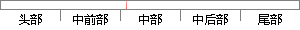

本章根据之前的需求分析，先确定了应用的整体架构和系统结构，之后划分了系统模块，并对每一个模块进行了简要说明，并针对每个模块中涵盖的功能点进行了详细设计，并对每个功能点都给出了相应的泳道图，明确了每个功能点的实现流程 ，接下来的第五章，我将基于其设计对每个功能点、每个模块的实现过程进行解释说明。
片段位置图

相似结果|
1
原句片段：本章根据之前的需求分析，先确定了应用的整体架构和系统结构，之后划分了系统模块，并对每
相似片段 1：根据需求分析阶段确定的功能,设计软件系统的整体结构、划分功能模块、确定每个模块...软件设计的工作包括:应用架构设计、网络架构设计、接口设计、角色权限设计、流程...
2
原句片段：一个模块进行了简要说明，并针对每个模块中涵盖的功能点进行了详细设计，并对每个功能点
相似片段 1：概要设计的基础上,开发者需要进行软件系统的详细设计...需要说明软件系统各个层次中的每一个程序(每个模块...分别实现各模块的功能,从而实现对目标系统的功能、...
|
※ 片段修改建议 ※
近似词参考：- 根据：按照 凭据 依据
- 之前：以前
- 分析：阐发 阐明 剖析
- 确定：肯定
- 应用：利用 运用
- 整体：团体 总体
- 系统：体系
- 结构：布局 构造
- 之后：以后
- 划分：分别
- 系统：体系
- 每一个：每个
- 简要：扼要
- 说明：申明 阐明
- 每个：每一个
- 功能：功效
- 详细：具体 细致
- 设计：计划
- 每个：每一个
- 功能：功效
- 相应：响应
- 明确：明白
- 每个：每一个
- 功能：功效
- 设计：计划
- 每个：每一个
- 功能：功效
- 每个：每一个
- 过程：进程 历程
- 进行：举行
- 解释：诠释 注释 表明
- 说明：申明 阐明
系统自动生成语句：本章按照以前的需求阐发，先肯定了利用的团体架构和体系布局，以后分别了体系模块，并对每一个模块举行了扼要申明，并针对每一个模块中涵盖的功效点举行了具体计划，并对每一个功效点都给出了响应的泳道图，明白了每一个功效点的实现流程 ，接下来的第五章，我将基于其计划对每一个功效点、每一个模块的实现进程举行诠释申明。
注：本片段修改建议为系统自动生成，仅供参考。